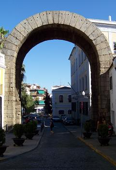
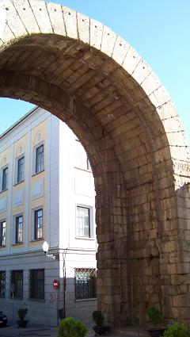

Arco de Trajano
|
Con una altura de 13,97 m de alto,
5,70 m de ancho y 8,67 m correspondientes a la luz del arco, se encuentra
situado en el cardo máximus. Ver video  |
 A través del arco se comunican los dos foros provincial y municipal. |
|
Ver Arcos Triunfales
|
||
|
Vida en Emérita
|
||
|
Espectáculos y ocio |
Periferia e infraestructuras |
|